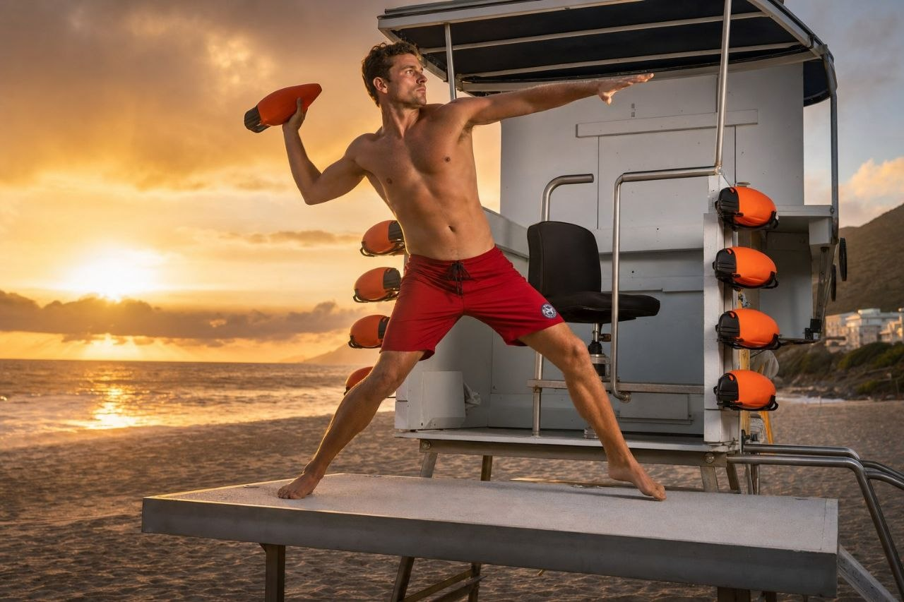
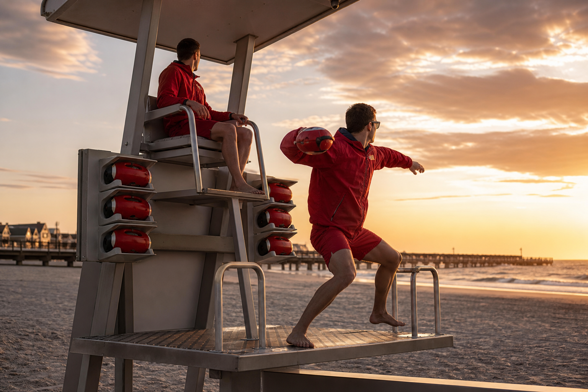
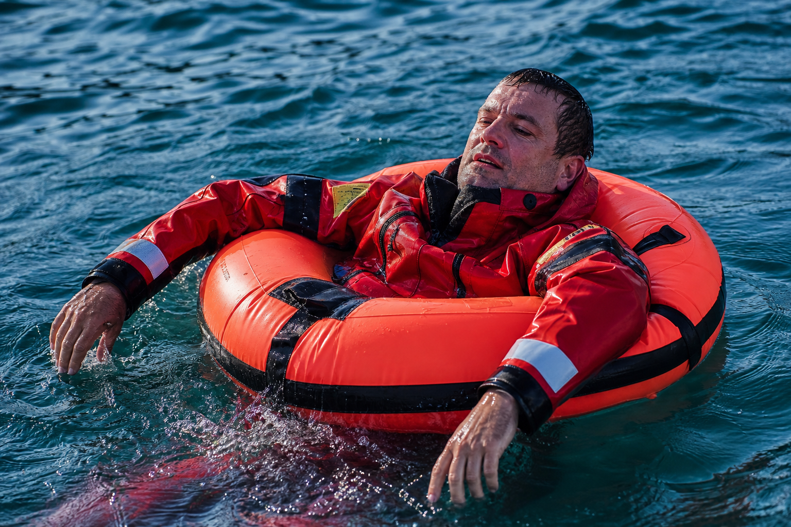
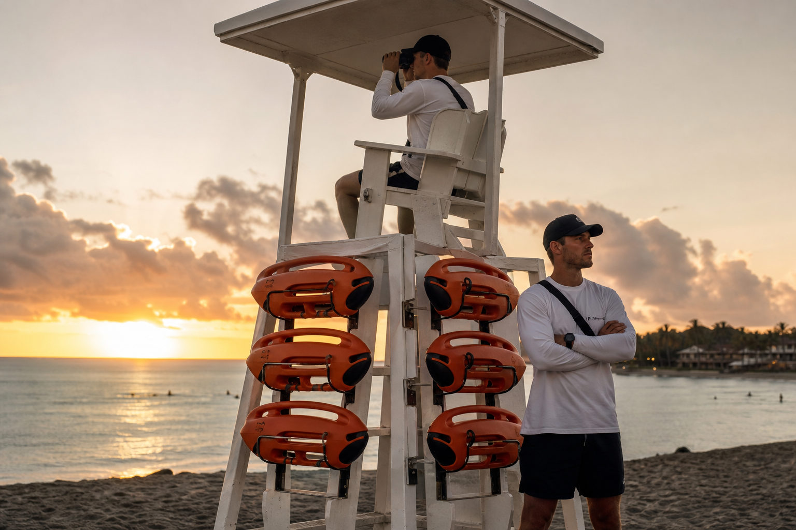

What makes it interesting
It is not a prettier ring buoy.
Life Launch only matters if it changes the sequence: quicker grab, better throw, faster repeat attempt, earlier flotation contact, then rescue follow-through.
Premium water rescue concept
Life Launch is built around a simple idea: stage the device at the tower, grab it instantly, and throw a compact rescue body before the response turns into a full swim-out. The hero image shows the exact motion the product is meant to unlock.

Product read
The close-up image makes the hardware legible: bright rescue orange, black grip surfaces, directional body shape, and fins that make it read like purpose-built marine equipment instead of a toy.
That matters because the throwing hero only works if viewers also understand what the device actually is when it is not in someone’s hand.
How the system works

Supporting visuals
Once the main hero establishes the throwing action, the other images explain the rest: the station layout, the product body, and the in-water support state.

What makes it interesting
Life Launch only matters if it changes the sequence: quicker grab, better throw, faster repeat attempt, earlier flotation contact, then rescue follow-through.
Design language
The site is built to feel like serious coastal equipment. Less gadget startup energy. More marine hardware, disciplined visuals, and credible use-case framing.
Who it is for
Primary fit
Guarded beaches and elevated stations where fast first contact can change the whole rescue sequence.
Operational fit
Waterfront properties that need visible rescue readiness without relying only on old awkward throw gear.
Hospitality fit
Premium guest-facing environments where safety hardware still needs to look intentional and high trust.

Why this site feels complete
Current status
This site is intentionally built as a premium concept surface. It does not claim certification, field validation, or commercial availability. It exists to make the idea understandable and beautiful while the real proof stack still needs to be built.